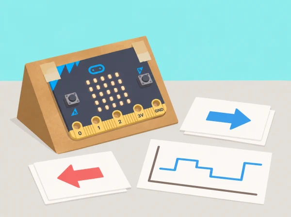

Un centre d’interpretació vol una maqueta interactiva que canvie de panell quan la placa s’inclina cap a una de dues direccions. Els equips aprenen què és IA, com les persones agrupen dades, com es recullen i netegen mostres de moviment, com s’entrena un model i com es connecta a un programa MakeCode. Les proves són anònimes i les etiquetes descriuen orientacions de l’objecte, no identitats ni capacitats de les persones.
Per a entrenar i provar, connecteu una micro:bit a CreateAI seguint la guia oficial de connexió i ús, recopileu dades de moviment de la maqueta, etiqueteu-les, entreneu el model i proveu-lo amb mostres diferents. En navegador d’ordinador, la connexió sense fil requereix Chrome o Edge i Bluetooth habilitat; també es pot usar l’app oficial compatible en tauleta. Des de CreateAI, obriu el projecte en MakeCode, reviseu els blocs de cada acció —inclosa l’eixida «unknown»—, descarregueu el programa i el model en una micro:bit V2 i proveu-los sense l’ordinador. Qualsevol versió de micro:bit pot recollir dades, entrenar i provar el model; per executar-lo amb MakeCode en la placa cal V2. Es pot reutilitzar la mateixa placa de recollida per descarregar el projecte, reconnectant-la després si cal continuar capturant. Fixeu-la a una maqueta lleugera, no al cos. Si la connexió sense fil o CreateAI no està disponible, feu les sessions amb targetes i dades simulades i indiqueu clarament que no s’ha executat el model físic.
No recopileu noms, veu, imatges ni dades de salut. Els moviments són voluntaris i no han de correspondre a gestos d’una persona concreta. CreateAI guarda els projectes localment al dispositiu/navegador i el fitxer HEX inclou mostres i model; establiu qui hi té accés i elimineu les dades després de la mostra si no cal conservar-les. No useu el model per avaluar persones, autenticar-les o decidir qui pot participar.
Recolliu etiquetes, diagrama del procés, taula de dades representatives i absents, targeta de proves, comparació abans/després de la millora, programa MakeCode i fitxa final del model. Valoreu la qualitat de les proves, l’explicació del biaix i la capacitat de limitar el propòsit del prototip.
Aquesta situació adapta les set lliçons de micro:bit First lessons with micro:bit CreateAI: introducció a IA, patrons de dades, etiquetatge i recollida, entrenament/prova, codi amb ML, avaluació del sistema i diversitat de dades. La maqueta, les etiquetes i els criteris són propis.